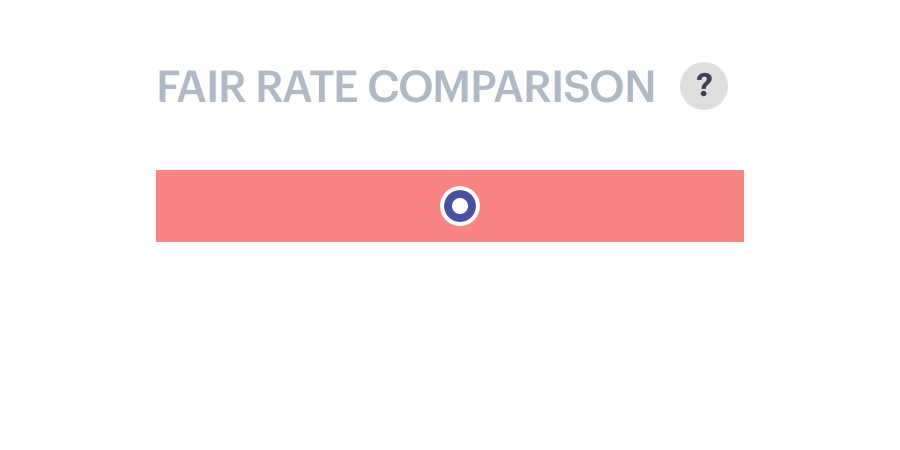

Bringing data to the people
Status Money
Overview
Status Money is a personal finance management platform that allows users to compare their finances with similar peer groups in order to better track their overall financial wellness. The MVP of the project was completed over the course of 6 two-week sprints and was taken on by the Elephant team as a test-run of a new, more integrated, client partner relationship. The two key stakeholders of the startup were embedded in the office 2-3 days out of the week, which allowed for more frequent check-ins and faster feedback turnarounds.
I was brought on to the project as a UX Designer to help develop the onboarding experience and the modular system of data visualizations that would be used throughout the site. Although we built the entire MVP from the ground up, I have framed this case study here with a bit more focused view, going into the thought process behind just one of the data modules we developed.
Key Site Features
1. Data Modules
When I joined the project the general design system had already been established, but more work needed to be done to ensure the library was flexible enough to accommodate a diverse range of different visualizations (pie charts, line graphs, bar charts, etc). Most importantly, each visualization had to clearly present the values of the user's financial status alongside those of their comparative groups.
2. Insight Cards
In order to help users digest all the visual information being presented, each of the visualizations was accompanied by a stack of contextual Insight Cards:
- Tracker: Insight related to peer groups or unusual spending
- Alert: Important account notification
- Offer: An offer or a promotion
- Nice to Know: Interesting, but not actionable trend.
3. Group Filter Sidebar
The ever-present Group Filter Sidebar displayed the color key for all the data comparisons. From the sidebar users were able to see the details of how their "People Like You" peer group (users with similar age, income, credit score and asset ownership) as well as toggle a third comparative group of people in their city or income range.

Bring on the Data
The interest rate module , which displayed the interest rates and monthly fee/interest totals for all of the user's debt accounts, was one of the more text-heavy modules that we were tasked with. It was a particularly interesting challenge trying to strike the right balance of visual aid and supportive text.
Notifications
A. Progress Circle
In this first iteration, the number of accounts with competitive rates is displayed over the total number of that type of debt account. This treatment was supposed to present a sense of urgency to "complete the circle" and achieve a better financial status. However, it quickly became clear that the circle graphic was too confusing to interpret, and the harsh red error was more annoying than encouraging.
B. Text Notification
I suggested we try a simpler text approach but ran into some issues with readability. Also with the exclamation marks, it made the error just as harsh as before.

C. Badge Notification
More like an app notification, the badge approach made it clear how many accounts were in need of attention. Although, it was clearthat red was likely not the right color to go with for these notifications.

Peer Comparison and Offers
Once the user was made aware of their eligible accounts, the next step was to solve for two key questions:
- What peer information would be most helpful for the user to gage the competitiveness of their current interest rates?
- How do we make clear the total savings the user is missing out on with their current interest rates?
In Option A, I presented the average overspend along with the potential savings but these numbers competed too much with one another. In Option B and Option C I minimized the importance of the median peer rate in an effort to highlight the potential savings (the more valuable metric), but the balance of information still felt too similar across the card. Taking a step in the opposite direction, I tried in Option D to pull the savings into card and present the median peer interest rate more prominently on the right.
Peer rate range
In the middle of tackling this issue of displaying the median peer rate we received legal feedback that we couldn't show just one number for the rate since the range was more accurate. As a result we shifted our perspective and attempted to present both the user's interest rates and the peer's rate range in the same visualization.
As shown below, I presented a few options for internal review that were more graphical as well as a text-based approach which ended up skewing too far away from our existing style guide.
-

Option A: Minimal
-

Option B: Clarified
-
Option C: Plain Language

Fair rate comparison in context
Moving into visual design
After getting feedback on the above approaches I worked closely with our visual designer to develop further visual treatments of the rate comparison and total savings. Paying especially close attention to the clarity of the notification and the "View Offers" CTA.

Final Design: Your Debts
In the end we landed on a cleaner design that provided ample breathing room for all the data. We placed the "View Offers" CTA at the top so that the user can easily jump to the offers page or dig deeper into each account and see how their rate compares to their peers.

More to come!
I hope to update this case study with more breakdowns of the onboarding process and the other data modules sometime soon, but in the meantime I encourage you to check out your own status at statusmoney.com and start making those first steps to a brighter financial future (filled with helpful tooltips and lots of soft grays).
Or you can just take other people's word for it:
What the people have to say
"In addition to this strength, we also believe, based on our own experience using the site, that they’ve done a good job of making the data easy to read, organize and customize. This is important because it could be really easy to get lost in all the numbers, percentages and graphs.
"Been using this for the past few weeks and it is an awesome way to really see how you are doing compared to your peers, region or any combination of segment you want to create. Can't wait to see features expanded in the future!"